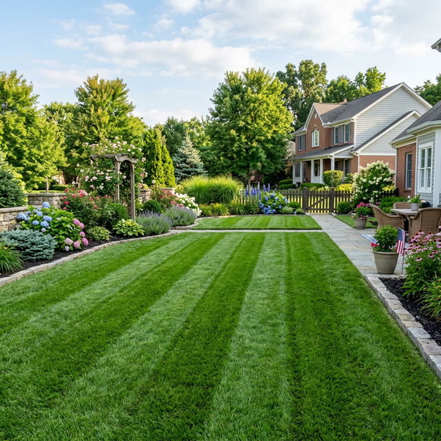
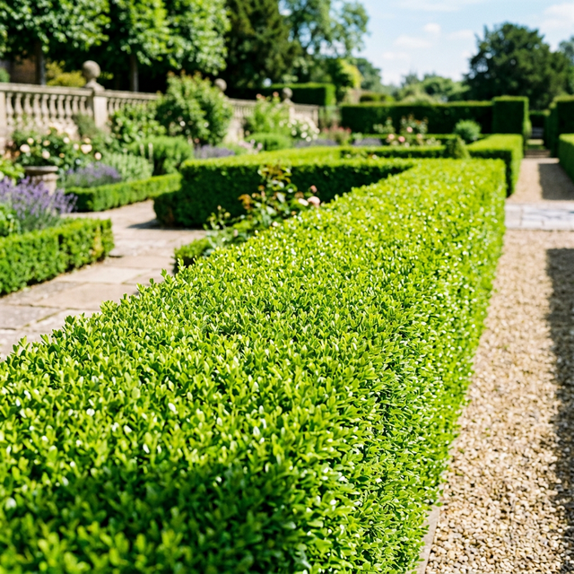
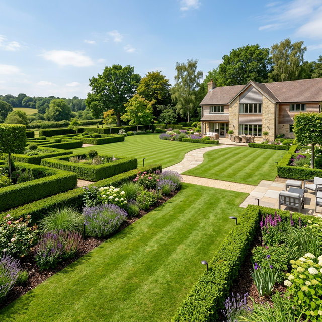

Manutenzione, progettazione e cura professionale di giardini e aree verdi a Cavallasca e in tutta la provincia di Como.
Curiamo ogni dettaglio del tuo giardino con attrezzature all'avanguardia e passione artigianale.
Interventi periodici per mantenere il tuo prato sempre verde, uniforme e in salute, con tagli precisi e concimazione mirata.
Potature professionali di contenimento e di rinvigorimento, sicure ed efficaci anche per alberi ad alto fusto.
Progettazione e installazione di sistemi di irrigazione automatizzati ed efficienti per garantire il giusto apporto idrico risparmiando acqua.
Dall'idea iniziale alla realizzazione: creiamo aiuole, installiamo prato a rotoli e studiamo la disposizione ottimale delle piante.
Rispettiamo gli orari concordati e le scadenze. Il tuo tempo è prezioso.
Utilizziamo macchinari di ultima generazione per un lavoro rapido, pulito e silenzioso.
Il punteggio di 5.0 stelle dei nostri clienti testimonia l'attenzione e la cura che mettiamo in ogni giardino.
Alcuni dei risultati reali ottenuti per i nostri clienti sul territorio lariano.



Sei a Cavallasca, San Fermo, Como o limitrofi? Contattaci per far tornare a splendere il tuo giardino.